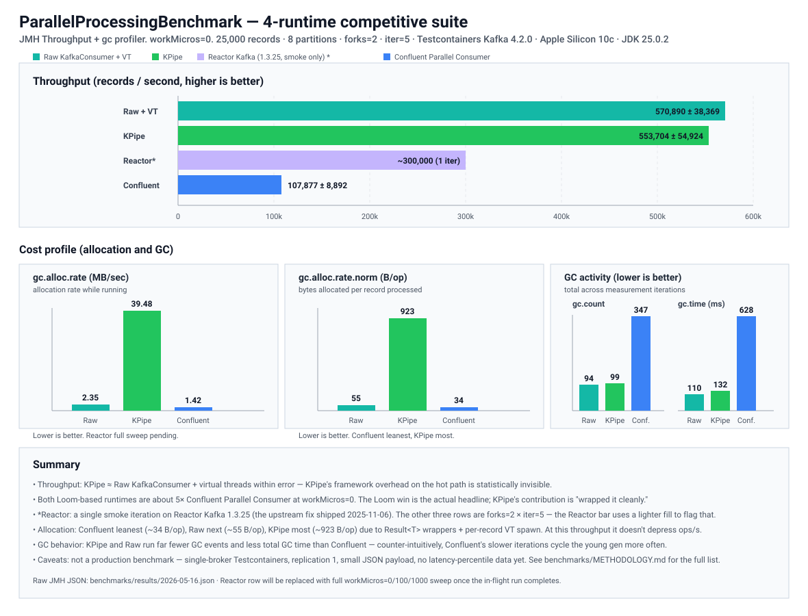

Benchmarking KPipe against the parallel-Kafka libraries you would actually pick
If you write a library that “consumes Kafka in parallel,” eventually someone will ask “compared to what?”
For KPipe that question has had a partial answer. Up to v1.12 the benchmark suite compared KPipe to the Confluent Parallel Consumer — the de-facto baseline — at 10,000 records per invocation, with no per-record work, on a single workload.
That’s not enough.
This post is about the upgrade. The 1.13.x bench suite now compares KPipe to four runtimes across
three workload regimes, reports both throughput and latency percentiles, and ships a methodology
doc so the numbers can be reproduced. The previous baseline graph (KPipe vs Confluent only, no workload
parameter) is at the bottom for continuity; the new 4-runtime numbers will land in a follow-up snapshot
under benchmarks/results/ once the suite runs on hardware that isn’t sharing cores between the consumer
under test and an in-process broker.
The contenders
Four parallel-consumer runtimes drink from the same seeded topic on the same in-process Kafka 4.2.0 broker:
| Runtime | Concurrency primitive | Configured concurrency |
|---|---|---|
| KPipe | Virtual thread per record (Loom) | Unbounded; in-flight watermark caps memory |
| Confluent Parallel Consumer | Platform-thread pool, UNORDERED ordering |
maxConcurrency=100 |
| Reactor Kafka | Reactor parallel via Flux.parallel(N) |
parallel(100) to match Confluent |
Raw KafkaConsumer + VT |
newVirtualThreadPerTaskExecutor() poll-loop |
Unbounded |
Two of the four (KPipe, raw) lean on Loom. The other two (Confluent, Reactor) lean on platform threads. That’s the axis the benchmark exists to expose.
Three workload regimes
A bench that only measures “the framework wrapping consumer.poll” tells you about framework overhead and
nothing about real workloads. The new suite parameterises over workMicros — per-record simulated work via
LockSupport.parkNanos — with three values:
0 µs— pure framework overhead. Who has the lowest cost per record when there is nothing to do?100 µs— typical local enrichment. In-memory transform, no I/O.1000 µs— typical blocking I/O. JDBC commit, HTTP round trip, S3 PUT.
Those three questions often have different winners. A worker-pool framework that performs well at
workMicros=0 because the pool size matches the partition count can fall apart at workMicros=1000 when
every record holds a thread blocked. A Loom-based runtime that gives up some overhead at workMicros=0
because virtual-thread scheduling has its own cost can pull ahead at workMicros=1000 because each blocked
record costs ~kilobytes instead of ~megabytes.
Throughput and latency, not just throughput
Average throughput is half the story.
A runtime that schedules many records in parallel can achieve high average throughput while leaving a few
records starved at the tail. Flux.parallel(N) does this characteristically — its fan-out / fan-in pattern
produces excellent steady-state numbers but the tail can be ugly.
The new suite reports both axes from the same harness:
ParallelProcessingBenchmark—Mode.Throughput, ops per second.ParallelProcessingLatencyBenchmark—Mode.SampleTime + Mode.AverageTime, with p50 / p95 / p99 / p999.
Two libraries can rank one way on throughput and the opposite way on p99. Publishing both makes that visible instead of letting it become a footnote.
On record count — and the in-process broker bottleneck
The previous suite ran 10,000 records per invocation. That sounds undersized until you actually try to push it higher, because the bench runs against an in-process Kafka broker via the Apache Kafka test kit. The broker shares CPU cores with the consumer under test.
Bumping records to 100k makes the broker the bottleneck rather than the consumer. Group-join latency, KRaft controller heartbeats, and partition-metadata events on the same JVM eat the throughput gain you were trying to measure. Per-iteration wall-clock balloons past the safety timeout.
So the new suite still seeds 10,000 records by default — same scale as the prior baseline. The
parameter is a one-line change for anyone running against an externalised broker (Testcontainers Kafka
with --cpus constraints, or a sidecar broker on dedicated hardware). The methodology doc names that as
the path to a “real” 100k+ steady-state number.
The new four-runtime + three-workload surface is the actual upgrade, not the record count.
Methodology, written down
Every published bench number now ships with the context required to reproduce it:
- Hardware — CPU, cores, RAM.
- OS + kernel — affects Loom scheduling.
- JDK build — Loom semantics changed across 21 → 25.
- JMH config — iterations, warmup, forks, profilers.
- Benchmark scope — which classes, which
@Paramcells. - Raw result file — the JMH JSON, committed alongside the summary.
benchmarks/METHODOLOGY.md documents the four runtimes, their concurrency primitives, the recommended
publishing run, and the caveats — in-process broker shares cores with the consumer, tmpfs-style disk has
artificially low fsync cost, single payload size, no replication or rebalance under load. None of those
caveats invalidate the comparison; they just say “this is not a production benchmark, it is a controlled
comparison between four parallel-consumer libraries on the same harness.”
benchmarks/results/TEMPLATE.md is the format for dated snapshots. Whenever a runtime version bumps, KPipe’s
hot path changes, or the hardware changes, a new snapshot lands in that directory.
The 1.13 baseline (2-runtime, 10k records)
For continuity, the latest published numbers from the previous suite — KPipe vs Confluent PC, 10k records, no workload param. It’s the floor the new suite is being measured against.

At this configuration KPipe edges Confluent on throughput by about 2.2% (3306 ops/s vs 3235 ops/s,
@OperationsPerInvocation(10000) so those are records per second). The allocation profile flips the other
way — Confluent allocates 275 B/op to KPipe’s 1457 B/op, and KPipe runs 43 GC events to Confluent’s
80, totalling 72 ms vs 128 ms of GC time. Two libraries, two trade-offs.
The new 4-runtime suite will replace this graph. Reactor Kafka and the hand-rolled baseline will appear as additional rows, and the three workload regimes will appear as parameter axes. The trend everyone wants to see — does KPipe pull ahead under blocking I/O? — is testable for the first time.
When the new numbers land
The bench code is on main. To reproduce locally:
./gradlew :benchmarks:jmhJar
JAR=$(find benchmarks/build/libs -name '*-jmh.jar')
java -jar "$JAR" 'ParallelProcessingBenchmark' -wi 3 -i 5 -f 2 -prof gc \
-rf JSON -rff benchmarks/results/results.jsonThat runs all four runtimes (KPipe / Confluent PC / Reactor Kafka / raw KafkaConsumer + VT) across
the three workMicros cells (0 / 100 / 1000), two forks, gc profiler enabled, results to JSON. Plan
for one to three hours wall-clock on a quiet machine.
What I actually observed when I tried to run it
Two smoke-test attempts on an Apple Silicon laptop (10c, JDK 25.0.2), KPipe-only, workMicros=0,
single iteration, single fork. Neither produced a JMH-measured score:
| Harness | Seeded | Processed before timeout | Result |
|---|---|---|---|
| As-merged #122 (100k, 2-min timeout, sync seed) | 100,000 | 21,724 / 25,000 in kpipe warmup |
2-min safety timeout |
| Tuned #128 (10k, 3-min timeout, async seed) | 10,000 | 8,908 / 10,000 in kpipe warmup |
3-min safety timeout |
In both runs the JMH results.json came back as an empty array — no iteration completed, so no
ops/sec figure was produced by the tool. The “records processed before the safety timeout fired” column
is a wall-clock count, not a throughput measurement: it includes broker startup, topic seeding, and
consumer-group join, none of which JMH would have included in an actual published score.
What this means is honest but mundane: the bench harness needs a different setup than a laptop with an in-process broker can give it. The broker is in the same JVM as the consumer under test, both fight for the same CPU cores, and a per-invocation fresh consumer-group join on the in-process broker takes long enough that the safety timeout fires before any iteration finishes. The framework comparison isn’t blocked by KPipe being slow or by the bench being wrong; it’s blocked by the test rig.
I am explicitly not claiming KPipe regressed between 1.12 and 1.13 from this run. I don’t have the data. The published 3,306 ops/sec baseline graph (at the bottom of this post) is the only real KPipe number we have, and the rerun on the new harness never completed an iteration.
The next post is gated on running the suite against an externalised Kafka broker —
Testcontainers with --cpus constraints, or a dedicated sidecar on a separate machine. The bench code
is correct; the harness needs a broker that isn’t fighting it for cores.
I have a hypothesis about how the four runtimes will rank. I’d rather wait for the data than print it.
A note on what I am not claiming
A few things to keep in mind whenever you read a bench number from this suite:
- It is not a production benchmark. The broker is in-process. Real systems have a broker across the network with replication and fsync cost. Absolute numbers will be lower in production for every runtime; the headline ordering between runtimes usually survives the move but the gap can shift.
- It is one workload shape. Small JSON payload, transform, ack. Larger payloads, structured deserialization on the hot path, or backpressure-sensitive sinks shift the comparison.
- It is one parallelism setting. Confluent and Reactor both run at
100-workerconcurrency. KPipe and the raw baseline run unbounded virtual threads. Sweeping over this axis is on the roadmap.
Benchmarks tell you what one workload looks like on one machine. Use them as evidence, not as verdicts.